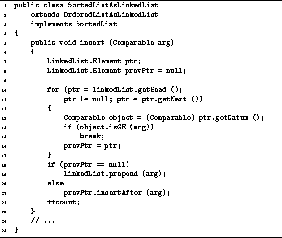

Data Structures and Algorithms
with Object-Oriented Design Patterns in Java
Data Structures and Algorithms
with Object-Oriented Design Patterns in Java
Program  gives the implementation of the insert
method of the SortedListAsLinkedList class.
This method takes a single argument:
the object to be inserted into the sorted list.
The algorithm used for the insertion is as follows:
First, the existing sorted, linked list is traversed
in order to find the linked list element which is greater than or equal
to the object to be inserted into the list.
The traversal is done using two variables--prevPtr and ptr.
During the traversal,
the latter keeps track of the current element
and the former keeps track of the previous element.
gives the implementation of the insert
method of the SortedListAsLinkedList class.
This method takes a single argument:
the object to be inserted into the sorted list.
The algorithm used for the insertion is as follows:
First, the existing sorted, linked list is traversed
in order to find the linked list element which is greater than or equal
to the object to be inserted into the list.
The traversal is done using two variables--prevPtr and ptr.
During the traversal,
the latter keeps track of the current element
and the former keeps track of the previous element.
By keeping track of the previous element,
it is possible to efficiently insert the new item into the sorted list
by calling the insertAfter method of the
LinkedList class.
In Chapter ,
the insertAfter method was shown to be O(1).
In the event that the item to be inserted is smaller than the first item in the sorted list, then rather than using the insertAfter method, the prepend method is used. The prepend method was also shown to be O(1).
In the worst case, the object to be inserted into the linked list
is larger than all of the objects already present in the list.
In this case, the entire list needs to be traversed
before doing the insertion.
Consequently, the total running time for the insert
operation of the SortedListAsLinkedList class is O(n),
where  .
.

Program: SortedListAsLinkedList class insert method.
 Copyright © 1998 by Bruno R. Preiss, P.Eng. All rights reserved.
Copyright © 1998 by Bruno R. Preiss, P.Eng. All rights reserved.